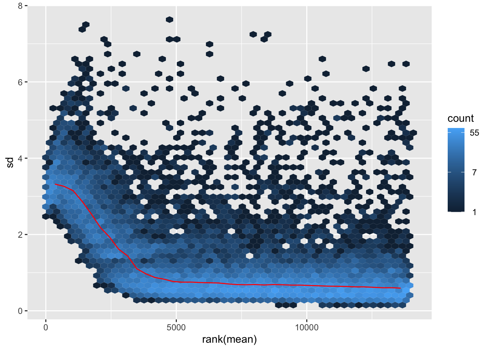
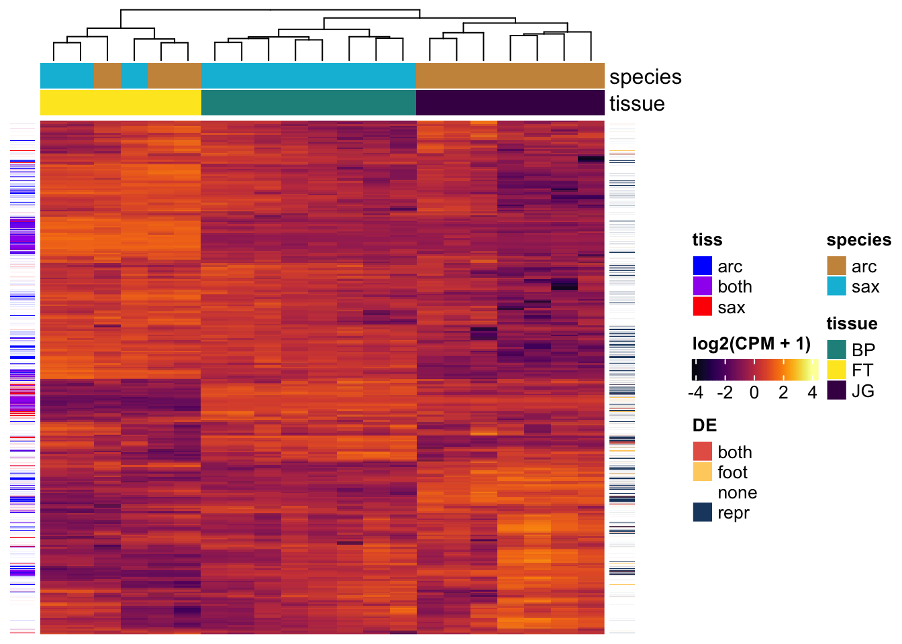

Littorina_DEseq2
MartinGarlovsky
2023-02-09
Last updated: 2023-10-26
Checks: 7 0
Knit directory: littorina_reprod_rnaseq/
This reproducible R Markdown analysis was created with workflowr (version 1.7.1). The Checks tab describes the reproducibility checks that were applied when the results were created. The Past versions tab lists the development history.
Great! Since the R Markdown file has been committed to the Git repository, you know the exact version of the code that produced these results.
Great job! The global environment was empty. Objects defined in the global environment can affect the analysis in your R Markdown file in unknown ways. For reproduciblity it’s best to always run the code in an empty environment.
The command set.seed(20230323) was run prior to running
the code in the R Markdown file. Setting a seed ensures that any results
that rely on randomness, e.g. subsampling or permutations, are
reproducible.
Great job! Recording the operating system, R version, and package versions is critical for reproducibility.
Nice! There were no cached chunks for this analysis, so you can be confident that you successfully produced the results during this run.
Great job! Using relative paths to the files within your workflowr project makes it easier to run your code on other machines.
Great! You are using Git for version control. Tracking code development and connecting the code version to the results is critical for reproducibility.
The results in this page were generated with repository version 8ad6e1c. See the Past versions tab to see a history of the changes made to the R Markdown and HTML files.
Note that you need to be careful to ensure that all relevant files for
the analysis have been committed to Git prior to generating the results
(you can use wflow_publish or
wflow_git_commit). workflowr only checks the R Markdown
file, but you know if there are other scripts or data files that it
depends on. Below is the status of the Git repository when the results
were generated:
Ignored files:
Ignored: .DS_Store
Ignored: .Rhistory
Ignored: .Rproj.user/
Ignored: analysis/figure/
Untracked files:
Untracked: README.html
Untracked: Stankowski_et_al_R1_RB_KJ_MDG.docx
Untracked: data/Littorina_scaffolded_PacBio_run2_7_Oct_2016_unmasked_maker.gff
Untracked: data/higherLower_genes.xlsx
Untracked: data/mixed_gene_count_matrix.csv
Untracked: data/reproductive_mode_TWISST.popGenwins.csv
Untracked: output/deseq_hm_md.rds
Untracked: output/deseq_results_foot_reprod.REDUCED.csv
Untracked: plots/
Note that any generated files, e.g. HTML, png, CSS, etc., are not included in this status report because it is ok for generated content to have uncommitted changes.
These are the previous versions of the repository in which changes were
made to the R Markdown (analysis/Littorina_DEseq2.Rmd) and
HTML (docs/Littorina_DEseq2.html) files. If you’ve
configured a remote Git repository (see ?wflow_git_remote),
click on the hyperlinks in the table below to view the files as they
were in that past version.
| File | Version | Author | Date | Message |
|---|---|---|---|---|
| Rmd | 8ad6e1c | MartinGarlovsky | 2023-10-26 | wflow_publish("analysis/Littorina_DEseq2.Rmd") |
| html | 2573add | MartinGarlovsky | 2023-03-23 | Build site. |
| Rmd | ca2b4bc | MartinGarlovsky | 2023-03-23 | publish deseq analysis |
Introduction
This analysis aims to identify differentially expressed genes of reproductive tissue between Littorina arcana and L. saxatalis. We collected jelly gland (JG) and and brood pouch (BP) for each species and foot tissue (FT) as a control to be able to identify ‘neutral’ divergence from reproductive tissue-specific differential expression. Two sets of tissue were harvested from females. First, reproductive tissue only (X replicates for each species). Second, 3 replicates for reproductive tissue and foot tissue for each species.
Key to identify the samples:
- BP_oBP - genes from brood pouch tissue from snails that only brood pouch was extracted
- BP_BPFT - genes from brood pouch tissue from snails that brood pouch and foot tissue were extracted
- FT_BPFT - genes from foot tissue from snails that brood pouch and foot tissue were extracted
- JG_oJG - genes from jelly gland tissue from snails that only jelly gland was extracted
- JG_JGFT - genes from jelly gland tissue from snails that jelly gland and foot tissue were extracted
- FT_JGFT - genes from foot tissue from snails that jelly gland and foot tissue were extracted
Load packages
library(tidyverse)
library(edgeR)
library(DESeq2)
library(ComplexHeatmap)
library(UpSetR)
library(eulerr)
library(kableExtra)
library(knitrhooks) # install with devtools::install_github("nathaneastwood/knitrhooks")
output_max_height() # a knitrhook option
options(stringsAsFactors = FALSE)
# colourblind friendly palette
cbPalette <- c("#999999", "#E69F00", "#56B4E9", "#009E73", "#F0E442", "#CC79A7", "#D55E00", "#0072B2", "#CC79A7")
# sean colours
sean_col <- c('arc' = '#CC944B',
'sax' = '#00BCDB')
# viridis palettes
v.pal <- viridis::viridis(n = 3, direction = -1)
m.pal <- viridis::magma(n = 5, direction = -1)
c.pal <- viridis::inferno(n = 7)Load data
Minimal filtering has been performed on the count matrix in HISAT2. Here, we first filter the count matrix to remove very lowly expressed genes, with less than 20 counts total across any replicate.
# Importing data
mixed_count_matrix <- read.csv("data/mixed_gene_count_matrix.csv", stringsAsFactors = FALSE,
header = T, row.names = 1)
#head(mixed_count_matrix)
#dim(mixed_count_matrix)
# filter genes with less than 20 reads
mixeddata <- mixed_count_matrix[which(rowSums(mixed_count_matrix[, 1:22]) >= 20), ]
#dim(mixeddata)
### Design matrix
# Adding a column "condition" with the sample information
sampleInfo <- data.frame(samp_info = colnames(mixeddata)) %>%
mutate(condition = case_when(grepl('^BP', x = samp_info) ~ 'REP_sax',
grepl('^JG', x = samp_info) ~ 'REP_arc',
grepl('^FT.*JGF$', x = samp_info) ~ 'FT_arc',
grepl('^FT.*BPF$', x = samp_info) ~ 'FT_sax'),
species = if_else(grepl('BP', samp_info), 'sax', 'arc'),
tissue = if_else(grepl('FT', samp_info), 'foot', 'reprod'),
reprod_only = if_else(grepl('o', samp_info), 'yes', 'no'),
Replicate = str_sub(samp_info, 3, 3))Data exploration
From the initial 60963 genes, we are left with 40736 after filtering
(67%). A first look at the data with boxplots we can see jelly gland
libraries generally have lower expression compared to other tissues.
From the heatmap we can also see that sample JG3_oJG is an
obvious outlier with many genes with very low counts. We will exclude
this sample from further analysis.
Boxplot
mixeddata %>%
pivot_longer(cols = 1:22) %>%
mutate(condition = case_when(grepl('^BP', x = name) ~ 'REP_sax',
grepl('^JG', x = name) ~ 'REP_arc',
grepl('^FT.*JGF$', x = name) ~ 'FT_arc',
grepl('^FT.*BPF$', x = name) ~ 'FT_sax'),
species = if_else(grepl('BP', name), 'sax', 'arc'),
tissue = if_else(grepl('FT', name), 'foot', 'reprod'),
reprod_only = if_else(grepl('o', name), 'yes', 'no'),
Replicate = str_sub(name, 3, 3)) %>%
ggplot(aes(x = name, y = cpm(value, log = TRUE), fill = condition)) +
geom_boxplot()
| Version | Author | Date |
|---|---|---|
| 2573add | MartinGarlovsky | 2023-03-23 |
Heatmap
# make DF
mat_scaled <- pheatmap:::scale_rows(cpm(mixeddata, log = TRUE))
colnames(mat_scaled) <- colnames(mixeddata)
#mat_scaled <- na.omit(mat_scaled)
top_anno_1 <- HeatmapAnnotation(species = str_sub(colnames(mat_scaled), 1, 2),
col = list(species = c('BP' = v.pal[2],
'JG' = v.pal[3])))
top_anno_1 <- HeatmapAnnotation(species = sampleInfo$species,
tissue = sampleInfo$tissue,
col = list(species = c('arc' = m.pal[2],
'sax' = m.pal[3]),
tissue = c('foot' = v.pal[1],
'reprod' = v.pal[3])))
### this heatmap takes a long time to plot
# #pdf('plots/all_hm.pdf', height = 8, width = 5)
# Heatmap(mat_scaled,
# col = RColorBrewer::brewer.pal(name = 'Spectral', n = 11),
# # heatmap_legend_param = list(title = "log2(CPM)",
# # title_position = "leftcenter-rot"),
# # right_annotation = labs1,
# top_annotation = top_anno_1,
# show_row_names = FALSE,
# show_row_dend = FALSE,
# show_column_names = FALSE,
# # column_split = 3,
# column_gap = unit(0, "mm"),
# row_title = NULL,
# column_title = NULL)
# #dev.off()Differential expression analysis with DESeq2
We perform differential expression analysis to compare the expression of genes in each reproductive mode/tissue type. We first filter the data to remove genes with low expression. To be included in the analysis, a gene must be expressed with moderately high expression (>=5 counts per million (cpm)) in at least 3 replicates across any tissue. This ensures that a gene is expressed consistently in at least 1 tissue (e.g. all 3 L. saxatalis foot libraries), or consistently across at least 2 tissues in at least 1 replicate.
# all data minus JG3_oJG
all_dat <- mixeddata %>% select(-JG3_oJG) %>%
rownames_to_column(var = 'GeneID')
# filter data
# filter > 5 cpm in 3 or more replicates
Keep.dat <- rowSums(cpm(all_dat[, -1]) >= 5) >= 3
all.Filtered <- all_dat[Keep.dat, ]After filtering we are left with 13945 genes (34%). Inspecting boxplots of cpms before and after normalisation shows replicates behave well. A principal component analysis (PCA) plot of the top 500 most variable genes shows samples cluster by tissue type (foot vs. reproductive tissue) on the first PC (67.2% variance explained) and then by reproductive mode (brooders vs. egg layers) on the second PC (12.6% var. expl.). The heatmap now also shows reproductive tissues cluster by reproductive mode first, whereas foot samples do not. There is also a batch effect apparent for the jelly gland samples, as the ‘jelly gland only’ samples cluster separately from the other jelly gland samples. We’ll include a batch term in the model to account for this.
cts <- as.matrix(all.Filtered[, -1])
rownames(cts) <- all.Filtered$GeneID
#summary(cts)
sampl2 <- sampleInfo %>% filter(samp_info != 'JG3_oJG')
dds <- DESeqDataSetFromMatrix(countData = cts,
colData = sampl2,
design = ~ reprod_only + tissue + species + tissue:species)
dds <- DESeq(dds)
#resultsNames(dds)
#vsd <- vst(dds, blind = FALSE)
rld <- rlog(dds, blind = FALSE)
norm_deseq <- assay(rld) %>% as.data.frame() %>%
rownames_to_column(var = 'GeneID')
# difference in normalisation
#pdf('plots/cpm_vs_normalised.pdf', height = 4, width = 9)
par(mfrow = c(1, 2))
boxplot(cpm(cts, log = TRUE), main = 'log2(cpm)')
boxplot(norm_deseq[, -1], main = 'normalised counts')
| Version | Author | Date |
|---|---|---|
| 2573add | MartinGarlovsky | 2023-03-23 |
par(mfrow = c(1, 1))
#dev.off()
plotMA(dds)
| Version | Author | Date |
|---|---|---|
| 2573add | MartinGarlovsky | 2023-03-23 |
plotDispEsts(dds)
| Version | Author | Date |
|---|---|---|
| 2573add | MartinGarlovsky | 2023-03-23 |
ntd <- normTransform(dds)
library(vsn)
meanSdPlot(assay(ntd))
| Version | Author | Date |
|---|---|---|
| 2573add | MartinGarlovsky | 2023-03-23 |
# # size/normalisation factors
# data.frame(size.factor = sizeFactors(dds)) %>%
# rownames_to_column()
pcaData <- plotPCA(rld, returnData = TRUE)
# PCA var explained
# #sum(attr(pcaData, "percentVar"))
# PCA (top 500 most variable genes)
pcaData %>%
mutate(species = if_else(grepl('JG', name), 'arc', 'sax'),
tissue = if_else(grepl('FT', name), 'foot', 'repr'),
batch = if_else(grepl('o', name), 'rep.only', 'other')) %>%
ggplot(aes(x = PC1, y = PC2, colour = species, shape = batch)) +
geom_point(size = 5, alpha = .75) +
labs(x = paste0('PC1 (', round(100*attr(pcaData, "percentVar")[1], 1), '%)'),
y = paste0('PC2 (', round(100*attr(pcaData, "percentVar")[2], 1), '%)'))
| Version | Author | Date |
|---|---|---|
| 2573add | MartinGarlovsky | 2023-03-23 |
# initial heatmap
Heatmap(pheatmap:::scale_rows(norm_deseq[, -1]),
#col = RColorBrewer::brewer.pal(name = 'Spectral', n = 11),
show_row_names = FALSE,
show_row_dend = FALSE,
column_gap = unit(0, "mm"),
row_title = NULL,
column_title = NULL)
| Version | Author | Date |
|---|---|---|
| 2573add | MartinGarlovsky | 2023-03-23 |
Principal component analysis
most_var <- norm_deseq %>% dplyr::select(-GeneID) %>%
mutate(vars = apply(., 1, var)) %>%
slice_max(vars, n = 500)
pca <- prcomp(t(as.matrix(most_var[, -22])), center = TRUE, scale. = FALSE)
#summary(pca)
PCA_dat <- as.data.frame(pca$x)[, 1:3] %>%
rownames_to_column() %>%
mutate(species = if_else(grepl('JG', rowname), 'arc', 'sax'),
tissue = if_else(grepl('FT', rowname), 'foot', 'repr'))
# Plot for figure
PCA_dat %>%
ggplot(aes(x = PC1, y = PC2, colour = species, shape = tissue)) +
geom_point(size = 8, alpha = .7) +
labs(x = paste0('PC1 (', 100*round(summary(pca)$importance[2, 1], 3), '%)'),
y = paste0('PC2 (', 100*round(summary(pca)$importance[2, 2], 3), '%)')) +
scale_colour_manual(values = sean_col,
labels = c(expression(italic('L. arc')),
expression(italic('L. sax')))) +
scale_shape_manual(values = c(16, 18), labels = c('Foot', 'Reprod.')) +
theme_bw() +
theme(legend.title = element_blank(),
legend.text.align = 0,
legend.text = element_text(size = 12),
legend.background = element_blank(),
axis.text = element_text(size = 10),
axis.title = element_text(size = 12)) +
#ggsave('plots/PCA_12.pdf', height = 3.4, width = 4.8, dpi = 600, useDingbats = FALSE) +
NULL
| Version | Author | Date |
|---|---|---|
| 2573add | MartinGarlovsky | 2023-03-23 |
rbind(as.matrix(PCA_dat[, c(2, 3)]),
as.matrix(PCA_dat[, c(2, 4)]),
as.matrix(PCA_dat[, c(3, 4)])) %>%
bind_cols(species = rep(PCA_dat$species, 3),
tissue = rep(PCA_dat$tissue, 3),
pc = rep(c(paste0('PC1 (',100*round(summary(pca)$importance[2, 1], 3), '%) vs. PC2 (',
100*round(summary(pca)$importance[2, 2], 3), '%)'),
paste0('PC1 (',100*round(summary(pca)$importance[2, 1], 3), '%) vs. PC3 (',
100*round(summary(pca)$importance[2, 3], 3), '%)'),
paste0('PC2 (',100*round(summary(pca)$importance[2, 2], 3), '%) vs. PC3 (',
100*round(summary(pca)$importance[2, 3], 3), '%)')),
each = 21)) %>%
ggplot(aes(x = PC1, y = PC2, colour = species, shape = tissue, alpha = .5)) +
geom_point(size = 8, alpha = .7) +
scale_colour_manual(values = sean_col,
labels = c(expression(italic('L. sax')),
expression(italic('L. arc')))) +
scale_shape_manual(values = c(16, 18), labels = c('Foot', 'Reprod.')) +
facet_wrap(~pc) +
theme_bw() +
theme(legend.title = element_blank(),
legend.text.align = 0,
legend.text = element_text(size = 12),
legend.background = element_blank(),
axis.text = element_text(size = 10),
axis.title = element_blank(),
strip.text = element_text(size = 15)) +
#ggsave('plots/PCA_12.pdf', height = 3.4, width = 4.5, dpi = 600, useDingbats = FALSE) +
NULL
| Version | Author | Date |
|---|---|---|
| 2573add | MartinGarlovsky | 2023-03-23 |
heatmap
deseq_scaled <- pheatmap:::scale_rows(norm_deseq[, -1])
colnames(deseq_scaled) <- colnames(norm_deseq[, -1])
rownames(deseq_scaled) <- norm_deseq[, 1]
sampl2 <- sampleInfo %>% filter(samp_info != 'JG3_oJG')
top_anno_all <- HeatmapAnnotation(species = sampl2$species,
tissue = str_sub(colnames(deseq_scaled), 1, 2),
col = list(species = c('arc' = m.pal[2],
'sax' = m.pal[3]),
tissue = c('FT' = v.pal[1],
'BP' = v.pal[2],
'JG' = v.pal[3])))
#pdf('plots/filtered_scaled_hm.pdf', height = 8, width = 5)
Heatmap(deseq_scaled,
col = viridis::inferno(25),
#col = RColorBrewer::brewer.pal(name = 'Spectral', n = 11),
heatmap_legend_param = list(title = "log2(CPM + 1)",
title_position = "leftcenter-rot"),
# left_annotation = left_anno,
# right_annotation = right_anno,
top_annotation = top_anno_all,
show_row_names = FALSE,
show_row_dend = FALSE,
# show_column_names = FALSE,
# column_split = 3,
column_gap = unit(0, "mm"),
row_title = NULL,
column_title = NULL)
| Version | Author | Date |
|---|---|---|
| 2573add | MartinGarlovsky | 2023-03-23 |
#dev.off()Differential expression
Tissue differences
We test for differential expression between tissues for each species separately to find consistently different/species-specific differentially expressed genes in foot compared to reproductive tissue. We define differentially expressed genes based on a log2-fold-change > |2| and FDR corrected p-value < 0.01.
# foot vs. reprod arcana
tiss_arc <- results(dds, tidy = TRUE, name = 'tissue_reprod_vs_foot') %>% as_tibble() %>%
mutate(threshold = if_else(padj < 0.01 & abs(log2FoldChange) > 2, "SD", "NS"))
# foot vs. reprod sax
tiss_sax <- results(dds, tidy = TRUE, list(c("tissue_reprod_vs_foot",
"tissuereprod.speciessax"))) %>% as_tibble() %>%
mutate(threshold = if_else(padj < 0.01 & abs(log2FoldChange) > 2, "SD", "NS"))
#table(tiss_arc$threshold)
#table(tiss_sax$threshold)
tissue_dat <- inner_join(tiss_arc,
tiss_sax, by = 'row') %>%
mutate(sig_a = if_else(abs(log2FoldChange.x) > 2 & padj.x < 0.01, 'sig', 'not'),
sig_s = if_else(abs(log2FoldChange.y) > 2 & padj.y < 0.01, 'sig', 'not'),
concordant = if_else(sign(log2FoldChange.x) == sign(log2FoldChange.y), 'same', 'diff')) %>%
mutate(category = case_when(sig_a == 'sig' & sig_s == 'sig' & concordant == 'same' ~ 'Concordant',
sig_a == 'sig' & sig_s == 'sig' & concordant == 'diff' ~ 'Opposing',
sig_a == 'sig' & sig_s == 'not' ~ 'L. arc',
sig_a == 'not' & sig_s == 'sig' ~ 'L. sax',
TRUE ~ 'No bias'))
tissue_dat %>%
ggplot(aes(x = log2FoldChange.x, y = log2FoldChange.y)) +
geom_hline(yintercept = c(-2, 2), lty = 2) +
geom_vline(xintercept = c(-2, 2), lty = 2) +
geom_abline(slope = 1, lty = 2) +
geom_point(aes(colour = category), alpha = .75) +
geom_smooth(method = 'lm') +
scale_colour_viridis_d(labels = c('Concordant', expression(italic('L. sax')),
expression(italic('L. arc')), 'No bias', 'Opposing')) +
labs(x = expression(paste('log2FC in ', italic('L. arc'))),
y = expression(paste('log2FC in ', italic('L. sax')))) +
theme_bw() +
theme(legend.position = 'bottom',
legend.title = element_blank(),
strip.text = element_text(face = "bold", size = 15),
strip.background = element_rect(fill = "grey"),
plot.background = element_rect(colour = NA)) +
NULL
| Version | Author | Date |
|---|---|---|
| 2573add | MartinGarlovsky | 2023-03-23 |
# upset(fromList(list(
# arc = tiss_arc$row[tiss_arc$threshold == 'SD'],
# sax = tiss_sax$row[tiss_sax$threshold == 'SD'])))Species effect for foot
Next we test for genes differentially expressed between reproductive modes for the foot tissue.
# main effect - species effect for foot
foot_diff <- results(dds, tidy = TRUE, name = 'species_sax_vs_arc') %>%
mutate(threshold = if_else(padj < 0.01 & abs(log2FoldChange) > 2, "SD", "NS"))
#table(foot_diff$threshold)
# volcano plot
foot_diff %>%
ggplot(aes(x = log2FoldChange, y = -log10(pvalue), colour = threshold)) +
geom_point() +
theme_bw() +
theme(legend.position = '') +
NULL
| Version | Author | Date |
|---|---|---|
| 2573add | MartinGarlovsky | 2023-03-23 |
Species effect for reproductive tissue
# species effect for reprod tissue - main effect plus interaction - extra species effect in reprod compared to foot
repr_diff <- results(dds, tidy = TRUE, list(c('species_sax_vs_arc',
'tissuereprod.speciessax'))) %>%
mutate(threshold = if_else(padj < 0.01 & abs(log2FoldChange) > 2, "SD", "NS"))
# interaction effect - is species effect different across tissues?
intr_diff <- results(dds, tidy = TRUE, name = 'tissuereprod.speciessax') %>%
mutate(threshold = if_else(padj < 0.01 & abs(log2FoldChange) > 2, "SD", "NS"))
# plotCounts(dds, gene = 'Lsa_00009005', returnData = TRUE) %>%
# ggplot(aes(x = condition, y = log2(count))) +
# geom_jitter(size = 3, width = .25)
#
# plotCounts(dds, gene = 'Lsa_00024235', returnData = TRUE) %>%
# ggplot(aes(x = condition, y = log2(count))) +
# geom_jitter(size = 3, width = .25)
#table(repr_diff$threshold)
#table(intr_diff$threshold)
# combined interaction + reprod difference excluding foot differences
cd <- setdiff(unique(c(intr_diff$row[intr_diff$threshold == 'SD'],
repr_diff$row[repr_diff$threshold == 'SD'])),
foot_diff$row[foot_diff$threshold == 'SD'])
#length(intr_diff$row[intr_diff$threshold == 'SD'])
#intersect(repr_diff$row[repr_diff$threshold == 'SD'], foot_diff$row[foot_diff$threshold == 'SD']) %>% length
#setdiff(repr_diff$row[repr_diff$threshold == 'SD'], foot_diff$row[foot_diff$threshold == 'SD']) %>% length
# # overlap between 'ejaculate candidates' identified using each species DB
# upset(fromList(list(
# foot = foot_diff$row[foot_diff$threshold == 'SD'],
# repr = repr_diff$row[repr_diff$threshold == 'SD'],
# intr = intr_diff$row[intr_diff$threshold == 'SD'])))
# exclude foot differences
rep_only <- setdiff(repr_diff$row[repr_diff$threshold == 'SD'], foot_diff$row[foot_diff$threshold == 'SD'])
# inspect some genes
norm_deseq %>%
filter(GeneID %in% rep_only) %>%
filter(GeneID %in% repr_diff$row[repr_diff$padj < 0.01 & repr_diff$log2FoldChange > 2]) %>%
# get a random sample of genes to look at
sample_n(30) %>%
pivot_longer(cols = 2:22) %>%
mutate(species = if_else(grepl('JG', name), 'arc', 'sax'),
tissue = if_else(grepl('FT', name), 'foot', 'repr')) %>%
ggplot(aes(x = tissue, y = value, colour = species)) +
geom_point(position = position_dodge(width = .5)) +
scale_color_brewer(palette = 'Set1') +
labs(x = '', y = 'log2(CPM + 1)') +
facet_wrap(~GeneID, scales = 'free_y') +
theme_bw() +
stat_summary(fun = median, position = position_dodge(width = .5),
geom = "point", shape = 5, size = 3) +
NULL
| Version | Author | Date |
|---|---|---|
| 2573add | MartinGarlovsky | 2023-03-23 |
volcano plot
lab_text <- data.frame(#P.Value = 1,
log2FoldChange = c(-10, 10),
lab = c("L. arc", 'L. sax'),
SigDiff = NA)
repr_diff %>%
ggplot(aes(x = log2FoldChange, y = -log10(pvalue), colour = threshold)) +
geom_point() +
theme_bw() +
theme(legend.position = '') +
geom_text(data = lab_text, colour = 'black', hjust = 'middle',
aes(y = 0.5, label = paste0(lab)), size = 10, fontface = "italic") +
geom_segment(aes(x = 15, y = 0, xend = 30, yend = 0), colour = 'black',
arrow = arrow(length = unit(0.5, "cm"))) +
geom_segment(aes(x = -15, y = 0, xend = -30, yend = 0), colour = 'black',
arrow = arrow(length = unit(0.5, "cm"))) +
NULL
| Version | Author | Date |
|---|---|---|
| 2573add | MartinGarlovsky | 2023-03-23 |
# merge data
comb_all <- inner_join(repr_diff,
foot_diff,
by = 'row', suffix = c('.repr', '.foot')) %>%
mutate(differ = case_when(threshold.repr == 'SD' & threshold.foot == 'SD' ~ 'both',
threshold.repr == 'SD' & threshold.foot != 'SD' ~ 'repr',
threshold.repr != 'SD' & threshold.foot == 'SD' ~ 'foot',
TRUE ~ 'none'),
tissue_diff = case_when(row %in% intersect(tiss_arc$row[tiss_arc$threshold == 'SD'],
tiss_sax$row[tiss_sax$threshold == 'SD']) ~ 'both',
row %in% tiss_arc$row[tiss_arc$threshold == 'SD'] ~ 'arc',
row %in% tiss_sax$row[tiss_sax$threshold == 'SD'] ~ 'sax'),
# #sig_diff = if_else(row %in% cd, 'sd', 'ns'),
# int_diff = if_else(row %in% intr_diff$row[intr_diff$threshold == 'SD'], 'sd', 'ns'),
# rep_diff = if_else(row %in% repr_diff$row[repr_diff$threshold == 'SD'], 'sd', 'ns'),
# i2 = case_when(row %in% foot_diff$row[foot_diff$threshold == 'SD'] ~ 'foot',
# row %in% repr_diff$row[repr_diff$threshold == 'SD'] ~ 'repr',
# row %in% intr_diff$row[intr_diff$threshold == 'SD'] ~ 'intr',
# TRUE ~ 'ns')
)
# number of differentially expressed genes in reproductive system found higher in each species
comb_all %>% filter(differ == 'repr') %>%
mutate(up_in = if_else(log2FoldChange.repr > 2, "sax", "arc")) %>%
dplyr::count(up_in) %>%
mutate(prop.n = n/sum(n))up_in n prop.n 1 arc 439 0.3384734 2 sax 858 0.6615266
# genes of interest
sean_ids <- readxl::read_xlsx("data/higherLower_genes.xlsx", col_names = FALSE) %>%
dplyr::rename(gene = 1)
# comb_all %>% filter(differ == 'repr') %>%
# mutate(up_in = if_else(log2FoldChange.repr > 2, "sax", "arc")) %>%
# filter(row %in% sean_ids$gene) %>%
# dplyr::select(gene = row, 2:7, up_in) %>% write_csv("output/sean_IDs.csv")
norm_deseq %>%
filter(GeneID %in% rep_only) %>%
filter(GeneID %in% sean_ids$gene) %>%
pivot_longer(cols = 2:22) %>%
mutate(species = if_else(grepl('JG', name), 'arc', 'sax'),
tissue = if_else(grepl('FT', name), 'foot', 'repr')) %>%
ggplot(aes(x = tissue, y = value, colour = species)) +
geom_point(position = position_dodge(width = .5)) +
scale_color_brewer(palette = 'Set1') +
labs(x = '', y = 'log2(CPM + 1)') +
facet_wrap(~GeneID, scales = 'free_y', nrow = 2) +
theme_bw() +
stat_summary(fun = median, position = position_dodge(width = .5),
geom = "point", shape = 5, size = 3) +
#ggsave('plots/sean_plots.pdf', height = 6, width = 14) +
NULL
| Version | Author | Date |
|---|---|---|
| 2573add | MartinGarlovsky | 2023-03-23 |
# table(comb_all$differ)
# table(comb_all$int_diff)
# table(comb_all$i2)
lab_text.cor <- data.frame(log2FoldChange.repr = c(-25, 25),
log2FoldChange.foot = c(-25, 25),
lab = c("L. arc", 'L. sax'),
SigDiff = NA)
# correlation
comb_all %>% filter(differ == 'none') %>%
ggplot(aes(x = log2FoldChange.repr, y = log2FoldChange.foot)) +
geom_hline(yintercept = c(-2, 2), lty = 2) +
geom_vline(xintercept = c(-2, 2), lty = 2) +
geom_point(size = 0.5, alpha = .25) +
geom_point(data = comb_all %>% filter(differ != 'none'),
aes(colour = differ),
alpha = .5) +
scale_colour_manual(values = MetBrewer::met.brewer('Hiroshige')[c(1, 4, 10)]) +
theme_bw() +
#theme(legend.position = '') +
geom_text(data = lab_text.cor, colour = 'black', hjust = 'middle',
aes(y = -28, label = paste0(lab)), size = 5, fontface = "italic") +
# x axis arrows
geom_segment(aes(x = 15, y = -30, xend = 30, yend = -30), colour = 'black',
arrow = arrow(length = unit(0.5, "cm"))) +
geom_segment(aes(x = -15, y = -30, xend = -30, yend = -30), colour = 'black',
arrow = arrow(length = unit(0.5, "cm"))) +
# y axis arrows
geom_segment(aes(x = -30, y = 15, xend = -30, yend = 30), colour = 'black',
arrow = arrow(length = unit(0.5, "cm"))) +
geom_segment(aes(x = -30, y = -15, xend = -30, yend = -30), colour = 'black',
arrow = arrow(length = unit(0.5, "cm"))) +
geom_text(data = lab_text.cor, colour = 'black', hjust = 'middle',
aes(x = -28, label = paste0(lab)), size = 5, angle = 90, fontface = "italic") +
#ggsave('plots/DA_cor.pdf', height = 3.4, width = 4.8, dpi = 600, useDingbats = FALSE) +
NULL
| Version | Author | Date |
|---|---|---|
| 2573add | MartinGarlovsky | 2023-03-23 |
# # counts
# comb_all %>%
# group_by(differ) %>% dplyr::count() %>% filter(differ != 'none')
comb_all %>%
mutate(up_in = if_else(log2FoldChange.repr > 2, 'sax', 'arc')) %>%
group_by(differ, up_in) %>% dplyr::count() %>% filter(differ != 'none') %>%
ggplot(aes(x = up_in, y = n, fill = differ)) +
geom_col() +
scale_fill_manual(values = MetBrewer::met.brewer('Hiroshige')[c(1, 4, 10)]) +
theme_bw() +
theme(legend.position = '') +
#ggsave('plots/DA_numbers.pdf', height = 4, width = 4, dpi = 600, useDingbats = FALSE) +
NULL
| Version | Author | Date |
|---|---|---|
| 2573add | MartinGarlovsky | 2023-03-23 |
Heatmap - all genes
This heatmap shows the expression of all 13945 used in the analysis, highlighting differentially expressed genes between reproductive tissue and foot tissue on the left annotation and differentially expressed genes between reproductive modes on the right hand side.
anno_dat <- deseq_scaled %>% as.data.frame() %>%
rownames_to_column() %>%
left_join(comb_all, by = c('rowname' = 'row'))
top_anno_all <- HeatmapAnnotation(species = sampl2$species,
tissue = str_sub(colnames(norm_deseq)[-1], 1, 2),
col = list(species = c('arc' = '#CC944B',
'sax' = '#00BCDB'),
tissue = c('FT' = v.pal[1],
'BP' = v.pal[2],
'JG' = v.pal[3])))
left_anno <- rowAnnotation(tiss = anno_dat$tissue_diff,
col = list(tiss = c(arc = 'blue',
sax = 'red',
both = 'purple')),
na_col = NA,
title = NULL,
show_annotation_name = FALSE)
right_anno <- rowAnnotation(DE = anno_dat$differ,
col = list(DE = c(none = NA,
repr = MetBrewer::met.brewer('Hiroshige')[10],
foot = MetBrewer::met.brewer('Hiroshige')[4],
both = MetBrewer::met.brewer('Hiroshige')[1])),
title = NULL,
show_annotation_name = FALSE)
#pdf('plots/DE_anno_hm.pdf', height = 8, width = 7)
Heatmap(deseq_scaled,
col = viridis::inferno(25),
#col = RColorBrewer::brewer.pal(name = 'Spectral', n = 11),
# heatmap_legend_param = list(title = "log2(CPM + 1)",
# title_position = "leftcenter-rot"),
heatmap_legend_param = list(title = "log2(CPM + 1)",
direction = "horizontal"),
left_annotation = left_anno,
right_annotation = right_anno,
top_annotation = top_anno_all,
show_row_names = FALSE,
show_row_dend = FALSE,
show_column_names = FALSE,
# column_split = 3,
#row_split = 2,
column_gap = unit(0, "mm"),
row_title = NULL,
column_title = NULL)
| Version | Author | Date |
|---|---|---|
| 2573add | MartinGarlovsky | 2023-03-23 |
#dev.off()Heatmap - differentially expressed genes only
#anno_dat %>% filter(differ == 'repr') %>% dplyr::select(starts_with('BP'), starts_with('JG'))
top_anno_de <- HeatmapAnnotation(species = sampl2$species[sampl2$tissue == 'reprod'],
#tissue = str_sub(colnames(norm_deseq)[-1], 1, 2),
col = list(species = c('arc' = '#CC944B',
'sax' = '#00BCDB'),
tissue = c('FT' = v.pal[1],
'BP' = v.pal[2],
'JG' = v.pal[3])))
#pdf('plots/DE_repr_hm.pdf', height = 8, width = 5)
Heatmap(anno_dat %>% filter(differ == 'repr') %>% dplyr::select(starts_with('BP'), starts_with('JG')),
col = viridis::inferno(25),
#col = RColorBrewer::brewer.pal(name = 'Spectral', n = 11),
# heatmap_legend_param = list(title = "log2(CPM + 1)",
# title_position = "leftcenter-rot"),
heatmap_legend_param = list(title = "log2(CPM + 1)",
direction = "horizontal"),
#left_annotation = left_anno,
#right_annotation = right_anno,
top_annotation = top_anno_de,
show_row_names = FALSE,
show_row_dend = FALSE,
show_column_names = FALSE,
# column_split = 3,
row_split = 2,
column_gap = unit(0, "mm"),
row_title = NULL,
column_title = NULL)
| Version | Author | Date |
|---|---|---|
| 2573add | MartinGarlovsky | 2023-03-23 |
#dev.off()
#hist(as.matrix(anno_dat %>% filter(differ == 'repr') %>% dplyr::select(starts_with('BP'), starts_with('JG'))))>>> response to reviewer
After filtering we are left with 13945 genes (34%). Inspecting boxplots of cpms before and after normalisation shows replicates behave well. A principal component analysis (PCA) plot of the top 500 most variable genes shows samples cluster by tissue type (foot vs. reproductive tissue) on the first PC (67.2% variance explained) and then by reproductive mode (brooders vs. egg layers) on the second PC (12.6% var. expl.). The heatmap now also shows reproductive tissues cluster by reproductive mode first, whereas foot samples do not. There is also a batch effect apparent for the jelly gland samples, as the ‘jelly gland only’ samples cluster separately from the other jelly gland samples. We’ll include a batch term in the model to account for this.
Removing the extra reproductive tissue samples
# all data minus JG3_oJG
reduced_dat <- mixeddata %>% select(!contains("o")) %>%
rownames_to_column(var = 'GeneID')
# filter data
# filter > 5 cpm in 3 or more replicates
Keep.red <- rowSums(cpm(reduced_dat[, -1]) >= 5) >= 3
red.Filtered <- reduced_dat[Keep.dat, ]
cts.red <- as.matrix(red.Filtered[, -1])
rownames(cts.red) <- red.Filtered$GeneID
#summary(cts)
sampl.red <- sampleInfo %>% filter(!str_detect(samp_info, "o"))
dds.red <- DESeqDataSetFromMatrix(countData = cts.red,
colData = sampl.red,
design = ~ tissue + species + tissue:species)
dds.red <- DESeq(dds.red)
#resultsNames(dds.red)
#vsd <- vst(dds.red, blind = FALSE)
rld.red <- rlog(dds.red, blind = FALSE)
norm_deseq.red <- assay(rld.red) %>% as.data.frame() %>%
rownames_to_column(var = 'GeneID')
# difference in normalisation
#pdf('plots/cpm_vs_normalised.pdf', height = 4, width = 9)
par(mfrow = c(1, 2))
boxplot(cpm(cts.red, log = TRUE), main = 'log2(cpm)')
boxplot(norm_deseq.red[, -1], main = 'normalised counts')par(mfrow = c(1, 1))
#dev.off()
plotMA(dds.red)plotDispEsts(dds.red)ntd.red <- normTransform(dds.red)
meanSdPlot(assay(ntd.red))# # size/normalisation factors
# data.frame(size.factor = sizeFactors(dds)) %>%
# rownames_to_column()
pcaData.red <- plotPCA(rld.red, returnData = TRUE)
# PCA var explained
# #sum(attr(pcaData, "percentVar"))
# PCA (top 500 most variable genes)
pcaData.red %>%
mutate(species = if_else(grepl('JG', name), 'arc', 'sax'),
tissue = if_else(grepl('FT', name), 'foot', 'repr')) %>%
ggplot(aes(x = PC1, y = PC2, colour = species)) +
geom_point(size = 5, alpha = .75) +
labs(x = paste0('PC1 (', round(100*attr(pcaData, "percentVar")[1], 1), '%)'),
y = paste0('PC2 (', round(100*attr(pcaData, "percentVar")[2], 1), '%)'))Principal component analysis
most_var.red <- norm_deseq.red %>% dplyr::select(-GeneID) %>%
mutate(vars = apply(., 1, var)) %>%
slice_max(vars, n = 500)
pca.red <- prcomp(t(as.matrix(most_var.red[, -13])), center = TRUE, scale. = FALSE)
#summary(pca.red)
PCA_dat.red <- as.data.frame(pca.red$x)[, 1:3] %>%
rownames_to_column() %>%
mutate(species = if_else(grepl('JG', rowname), 'arc', 'sax'),
tissue = if_else(grepl('FT', rowname), 'foot', 'repr'))
# Plot for figure
PCA_dat.red %>%
ggplot(aes(x = PC1, y = PC2, colour = species, shape = tissue)) +
geom_point(size = 8, alpha = .7) +
labs(x = paste0('PC1 (', 100*round(summary(pca.red)$importance[2, 1], 3), '%)'),
y = paste0('PC2 (', 100*round(summary(pca.red)$importance[2, 2], 3), '%)')) +
scale_colour_manual(values = sean_col,
labels = c(expression(italic('L. arc')),
expression(italic('L. sax')))) +
scale_shape_manual(values = c(16, 18), labels = c('Foot', 'Reprod.')) +
theme_bw() +
theme(legend.title = element_blank(),
legend.text.align = 0,
legend.text = element_text(size = 12),
legend.background = element_blank(),
axis.text = element_text(size = 10),
axis.title = element_text(size = 12)) +
#ggsave('plots/PCA_12.red.pdf', height = 3.4, width = 4.8, dpi = 600, useDingbats = FALSE) +
NULLrbind(as.matrix(PCA_dat.red[, c(2, 3)]),
as.matrix(PCA_dat.red[, c(2, 4)]),
as.matrix(PCA_dat.red[, c(3, 4)])) %>%
bind_cols(species = rep(PCA_dat.red$species, 3),
tissue = rep(PCA_dat.red$tissue, 3),
pc = rep(c(paste0('PC1 (',100*round(summary(pca.red)$importance[2, 1], 3), '%) vs. PC2 (',
100*round(summary(pca.red)$importance[2, 2], 3), '%)'),
paste0('PC1 (',100*round(summary(pca.red)$importance[2, 1], 3), '%) vs. PC3 (',
100*round(summary(pca.red)$importance[2, 3], 3), '%)'),
paste0('PC2 (',100*round(summary(pca.red)$importance[2, 2], 3), '%) vs. PC3 (',
100*round(summary(pca.red)$importance[2, 3], 3), '%)')),
each = 12)) %>%
ggplot(aes(x = PC1, y = PC2, colour = species, shape = tissue, alpha = .5)) +
geom_point(size = 8, alpha = .7) +
scale_colour_manual(values = sean_col,
labels = c(expression(italic('L. sax')),
expression(italic('L. arc')))) +
scale_shape_manual(values = c(16, 18), labels = c('Foot', 'Reprod.')) +
facet_wrap(~pc) +
theme_bw() +
theme(legend.title = element_blank(),
legend.text.align = 0,
legend.text = element_text(size = 12),
legend.background = element_blank(),
axis.text = element_text(size = 10),
axis.title = element_blank(),
strip.text = element_text(size = 15)) +
#ggsave('plots/PCA_12.pdf', height = 3.4, width = 4.5, dpi = 600, useDingbats = FALSE) +
NULLheatmap
deseq_scaled.red <- pheatmap:::scale_rows(norm_deseq.red[, -1])
colnames(deseq_scaled.red) <- colnames(norm_deseq.red[, -1])
rownames(deseq_scaled.red) <- norm_deseq.red[, 1]
#sampl2 <- sampleInfo %>% filter(!str_detect(samp_info, "o")) %>% filter(samp_info != 'JG3_oJG')
top_anno_all.red <- HeatmapAnnotation(species = sampl.red$species,
tissue = str_sub(colnames(deseq_scaled.red), 1, 2),
col = list(species = sean_col,
tissue = c('FT' = v.pal[1],
'BP' = v.pal[2],
'JG' = v.pal[3])))
#pdf('plots/filtered_scaled_hm.pdf', height = 8, width = 5)
Heatmap(na.omit(deseq_scaled.red),
col = viridis::inferno(25),
#col = RColorBrewer::brewer.pal(name = 'Spectral', n = 11),
heatmap_legend_param = list(title = "log2(CPM + 1)",
title_position = "leftcenter-rot"),
# left_annotation = left_anno,
# right_annotation = right_anno,
top_annotation = top_anno_all.red,
show_row_names = FALSE,
show_row_dend = FALSE,
# show_column_names = FALSE,
# column_split = 3,
column_gap = unit(0, "mm"),
row_title = NULL,
column_title = NULL)#dev.off()Differential expression
Tissue differences
We test for differential expression between tissues for each species separately to find consistently different/species-specific differentially expressed genes in foot compared to reproductive tissue. We define differentially expressed genes based on a log2-fold-change > |2| and FDR corrected p-value < 0.01.
# foot vs. reprod arcana
tiss_arc.red <- results(dds.red, tidy = TRUE, name = 'tissue_reprod_vs_foot') %>% as_tibble() %>%
mutate(threshold = if_else(padj < 0.01 & abs(log2FoldChange) > 2, "SD", "NS"))
# foot vs. reprod sax
tiss_sax.red <- results(dds.red, tidy = TRUE, list(c("tissue_reprod_vs_foot",
"tissuereprod.speciessax"))) %>% as_tibble() %>%
mutate(threshold = if_else(padj < 0.01 & abs(log2FoldChange) > 2, "SD", "NS"))
#table(tiss_arc.red$threshold)
#table(tiss_sax.red$threshold)
tissue_dat.red <- inner_join(tiss_arc.red,
tiss_sax.red, by = 'row') %>%
mutate(sig_a = if_else(abs(log2FoldChange.x) > 2 & padj.x < 0.01, 'sig', 'not'),
sig_s = if_else(abs(log2FoldChange.y) > 2 & padj.y < 0.01, 'sig', 'not'),
concordant = if_else(sign(log2FoldChange.x) == sign(log2FoldChange.y), 'same', 'diff')) %>%
mutate(category = case_when(sig_a == 'sig' & sig_s == 'sig' & concordant == 'same' ~ 'Concordant',
sig_a == 'sig' & sig_s == 'sig' & concordant == 'diff' ~ 'Opposing',
sig_a == 'sig' & sig_s == 'not' ~ 'L. arc',
sig_a == 'not' & sig_s == 'sig' ~ 'L. sax',
TRUE ~ 'No bias'))
tissue_dat.red %>%
ggplot(aes(x = log2FoldChange.x, y = log2FoldChange.y)) +
geom_hline(yintercept = c(-2, 2), lty = 2) +
geom_vline(xintercept = c(-2, 2), lty = 2) +
geom_abline(slope = 1, lty = 2) +
geom_point(aes(colour = category), alpha = .75) +
geom_smooth(method = 'lm') +
scale_colour_viridis_d(labels = c('Concordant', expression(italic('L. sax')),
expression(italic('L. arc')), 'No bias', 'Opposing')) +
labs(x = expression(paste('log2FC in ', italic('L. arc'))),
y = expression(paste('log2FC in ', italic('L. sax')))) +
theme_bw() +
theme(legend.position = 'bottom',
legend.title = element_blank(),
strip.text = element_text(face = "bold", size = 15),
strip.background = element_rect(fill = "grey"),
plot.background = element_rect(colour = NA)) +
NULL# upset(fromList(list(
# arc = tiss_arc.red$row[tiss_arc.red$threshold == 'SD'],
# sax = tiss_sax.red$row[tiss_sax.red$threshold == 'SD'])))Species effect for foot
Next we test for genes differentially expressed between reproductive modes for the foot tissue.
# main effect - species effect for foot
foot_diff.red <- results(dds.red, tidy = TRUE, name = 'species_sax_vs_arc') %>%
mutate(threshold = if_else(padj < 0.01 & abs(log2FoldChange) > 2, "SD", "NS"))
#table(foot_diff.red$threshold)
# volcano plot
foot_diff.red %>%
ggplot(aes(x = log2FoldChange, y = -log10(pvalue), colour = threshold)) +
geom_point() +
theme_bw() +
theme(legend.position = '') +
NULLSpecies effect for reproductive tissue
# species effect for reprod tissue - main effect plus interaction - extra species effect in reprod compared to foot
repr_diff.red <- results(dds.red, tidy = TRUE, list(c('species_sax_vs_arc',
'tissuereprod.speciessax'))) %>%
mutate(threshold = if_else(padj < 0.01 & abs(log2FoldChange) > 2, "SD", "NS"))
# interaction effect - is species effect different across tissues?
intr_diff.red <- results(dds.red, tidy = TRUE, name = 'tissuereprod.speciessax') %>%
mutate(threshold = if_else(padj < 0.01 & abs(log2FoldChange) > 2, "SD", "NS"))
#table(repr_diff.red$threshold)
#table(intr_diff.red$threshold)
# combined interaction + reprod difference excluding foot differences
cd.red <- setdiff(unique(c(intr_diff.red$row[intr_diff.red$threshold == 'SD'],
repr_diff.red$row[repr_diff.red$threshold == 'SD'])),
foot_diff.red$row[foot_diff.red$threshold == 'SD'])
length(intr_diff$row[intr_diff$threshold == 'SD'])[1] 724
intersect(repr_diff$row[repr_diff$threshold == 'SD'], foot_diff$row[foot_diff$threshold == 'SD']) %>% length[1] 154
setdiff(repr_diff$row[repr_diff$threshold == 'SD'], foot_diff$row[foot_diff$threshold == 'SD']) %>% length[1] 1297
length(intr_diff.red$row[intr_diff.red$threshold == 'SD'])[1] 549
intersect(repr_diff.red$row[repr_diff.red$threshold == 'SD'], foot_diff.red$row[foot_diff.red$threshold == 'SD']) %>% length[1] 158
setdiff(repr_diff.red$row[repr_diff.red$threshold == 'SD'], foot_diff.red$row[foot_diff.red$threshold == 'SD']) %>% length[1] 747
# upset(fromList(list(
# foot = foot_diff.red$row[foot_diff.red$threshold == 'SD'],
# repr = repr_diff.red$row[repr_diff.red$threshold == 'SD'],
# intr = intr_diff.red$row[intr_diff.red$threshold == 'SD'])))
# exclude foot differences
rep_only.red <- setdiff(repr_diff.red$row[repr_diff.red$threshold == 'SD'],
foot_diff.red$row[foot_diff.red$threshold == 'SD'])volcano plot
lab_text <- data.frame(#P.Value = 1,
log2FoldChange = c(-10, 10),
lab = c("L. arc", 'L. sax'),
SigDiff = NA)
repr_diff.red %>%
ggplot(aes(x = log2FoldChange, y = -log10(pvalue), colour = threshold)) +
geom_point() +
theme_bw() +
theme(legend.position = '') +
geom_text(data = lab_text, colour = 'black', hjust = 'middle',
aes(y = 0.5, label = paste0(lab)), size = 10, fontface = "italic") +
geom_segment(aes(x = 15, y = 0, xend = 30, yend = 0), colour = 'black',
arrow = arrow(length = unit(0.5, "cm"))) +
geom_segment(aes(x = -15, y = 0, xend = -30, yend = 0), colour = 'black',
arrow = arrow(length = unit(0.5, "cm"))) +
NULL
# merge data
comb_all.red <- inner_join(repr_diff.red,
foot_diff.red,
by = 'row', suffix = c('.repr', '.foot')) %>%
mutate(differ = case_when(threshold.repr == 'SD' & threshold.foot == 'SD' ~ 'both',
threshold.repr == 'SD' & threshold.foot != 'SD' ~ 'repr',
threshold.repr != 'SD' & threshold.foot == 'SD' ~ 'foot',
TRUE ~ 'none'),
tissue_diff = case_when(row %in% intersect(tiss_arc.red$row[tiss_arc.red$threshold == 'SD'],
tiss_sax.red$row[tiss_sax.red$threshold == 'SD']) ~ 'both',
row %in% tiss_arc.red$row[tiss_arc.red$threshold == 'SD'] ~ 'arc',
row %in% tiss_sax.red$row[tiss_sax.red$threshold == 'SD'] ~ 'sax'),
# #sig_diff = if_else(row %in% cd, 'sd', 'ns'),
# int_diff = if_else(row %in% intr_diff$row[intr_diff$threshold == 'SD'], 'sd', 'ns'),
# rep_diff = if_else(row %in% repr_diff$row[repr_diff$threshold == 'SD'], 'sd', 'ns'),
# i2 = case_when(row %in% foot_diff$row[foot_diff$threshold == 'SD'] ~ 'foot',
# row %in% repr_diff$row[repr_diff$threshold == 'SD'] ~ 'repr',
# row %in% intr_diff$row[intr_diff$threshold == 'SD'] ~ 'intr',
# TRUE ~ 'ns')
)
# number of differentially expressed genes in reproductive system found higher in each species
comb_all.red %>% filter(differ == 'repr') %>%
mutate(up_in = if_else(log2FoldChange.repr > 2, "sax", "arc")) %>%
dplyr::count(up_in) %>%
mutate(prop.n = n/sum(n))up_in n prop.n 1 arc 380 0.5087015 2 sax 367 0.4912985
table(comb_all.red$differ)both foot none repr 157 140 12901 747
table(comb_all.red$int_diff)< table of extent 0 >
table(comb_all.red$i2)< table of extent 0 >
# ## check overlap with original analysis.
# #rep_only
upset(fromList(list(
old = rep_only,
new = rep_only.red)))lab_text.cor <- data.frame(log2FoldChange.repr = c(-25, 25),
log2FoldChange.foot = c(-25, 25),
lab = c("L. arc", 'L. sax'),
SigDiff = NA)
# correlation
comb_all.red %>% filter(differ == 'none') %>%
ggplot(aes(x = log2FoldChange.repr, y = log2FoldChange.foot)) +
geom_hline(yintercept = c(-2, 2), lty = 2) +
geom_vline(xintercept = c(-2, 2), lty = 2) +
geom_point(size = 0.5, alpha = .25) +
geom_point(data = comb_all %>% filter(differ != 'none'),
aes(colour = differ),
alpha = .5) +
scale_colour_manual(values = MetBrewer::met.brewer('Hiroshige')[c(1, 4, 10)]) +
theme_bw() +
#theme(legend.position = '') +
geom_text(data = lab_text.cor, colour = 'black', hjust = 'middle',
aes(y = -28, label = paste0(lab)), size = 5, fontface = "italic") +
# x axis arrows
geom_segment(aes(x = 15, y = -30, xend = 30, yend = -30), colour = 'black',
arrow = arrow(length = unit(0.5, "cm"))) +
geom_segment(aes(x = -15, y = -30, xend = -30, yend = -30), colour = 'black',
arrow = arrow(length = unit(0.5, "cm"))) +
# y axis arrows
geom_segment(aes(x = -30, y = 15, xend = -30, yend = 30), colour = 'black',
arrow = arrow(length = unit(0.5, "cm"))) +
geom_segment(aes(x = -30, y = -15, xend = -30, yend = -30), colour = 'black',
arrow = arrow(length = unit(0.5, "cm"))) +
geom_text(data = lab_text.cor, colour = 'black', hjust = 'middle',
aes(x = -28, label = paste0(lab)), size = 5, angle = 90, fontface = "italic") +
#ggsave('plots/DA_cor.pdf', height = 3.4, width = 4.8, dpi = 600, useDingbats = FALSE) +
NULL# counts
comb_all %>%
group_by(differ) %>% dplyr::count() %>% filter(differ != 'none')# A tibble: 3 × 2 # Groups: differ [3] differ n1 both 153 2 foot 148 3 repr 1297
comb_all.red %>%
group_by(differ) %>% dplyr::count() %>% filter(differ != 'none')# A tibble: 3 × 2 # Groups: differ [3] differ n1 both 157 2 foot 140 3 repr 747
comb_all.red %>%
mutate(up_in = if_else(log2FoldChange.repr > 2, 'sax', 'arc')) %>%
group_by(differ, up_in) %>% dplyr::count() %>% filter(differ != 'none') %>%
ggplot(aes(x = up_in, y = n, fill = differ)) +
geom_col() +
scale_fill_manual(values = MetBrewer::met.brewer('Hiroshige')[c(1, 4, 10)]) +
theme_bw() +
theme(legend.position = '') +
#ggsave('plots/DA_numbers.red.jpg', height = 4, width = 4, dpi = 600) +
#ggsave('plots/DA_numbers.red.pdf', height = 4, width = 4, dpi = 600, useDingbats = FALSE) +
NULL# comparing old to new results
upset(fromList(list(
old = repr_diff$row[repr_diff$threshold == 'SD'],
new = repr_diff.red$row[repr_diff.red$threshold == 'SD'])))
upset(fromList(list(
old = foot_diff$row[foot_diff$threshold == 'SD'],
new = foot_diff.red$row[foot_diff.red$threshold == 'SD'])))left_join(comb_all, comb_all.red, by = "row") %>%
ggplot(aes(x = log2FoldChange.repr.x, y = log2FoldChange.repr.y)) +
geom_point()comb_all %>% select(row, contains("baseMean"), contains("log2"), contains("threshold"), differ) %>%
pivot_longer(2:3) %>%
ggplot(aes(x = name, y = log2(value), colour = threshold.foot)) +
geom_boxplot(notch = TRUE)difdat <- left_join(repr_diff, repr_diff.red, by = "row") %>%
mutate(thres.dif = case_when(threshold.x == threshold.y ~ "same",
threshold.x == "SD" & threshold.y != "SD" ~ "SDold",
threshold.x != "SD" & threshold.y == "SD" ~ "SDnew",
threshold.x == "SD" & threshold.y == "NS" ~ "SDold",
threshold.x == "NS" & threshold.y == "SD" ~ "SDnew"))
difdat %>%
ggplot(aes(x = log2FoldChange.x, y = log2FoldChange.y, colour = thres.dif)) +
geom_hline(yintercept = c(-2, 2), lty = 2) +
geom_vline(xintercept = c(-2, 2), lty = 2) +
geom_abline(slope = 1, lty = 2) +
geom_point() +
labs(x = "log2FC sax - arc (old)", y = "log2FC sax - arc (new)") +
#ggsave('plots/DA_cor.jpg', height = 4, width = 5, dpi = 600) +
NULLdifdat %>% drop_na(thres.dif) %>%
filter(thres.dif != "same") %>%
ggplot(aes(x = log2(baseMean.y), y = log2FoldChange.y, colour = thres.dif)) +
geom_point(data = difdat %>% filter(thres.dif == "same"), alpha = .5, colour = "grey") +
geom_point(alpha = .5) +
scale_colour_manual(values = c("red", "blue")) +
#ggsave('plots/MA_new.jpg', height = 4, width = 5, dpi = 600) +
NULLdifdat %>% drop_na(thres.dif) %>%
filter(thres.dif != "same") %>%
ggplot(aes(x = log2(baseMean.x), y = log2FoldChange.x, colour = thres.dif)) +
geom_point(data = difdat %>% filter(thres.dif == "same"), alpha = .5, colour = "grey") +
geom_point(alpha = .5) +
scale_colour_manual(values = c("red", "blue")) +
#ggsave('plots/MA_old.jpg', height = 4, width = 5, dpi = 600) +
NULLdifdat %>% #drop_na(thres.dif) %>%
#filter(thres.dif != "same") %>%
ggplot(aes(x = log2(baseMean.x), y = log2(baseMean.y), colour = thres.dif)) +
#geom_point(data = difdat %>% filter(thres.dif == "same"), alpha = .5, colour = "grey") +
geom_point(alpha = .5) +
geom_abline(slope = 1, lty = 2) +
NULLDEG Tr associations
# sean_positions <- read.csv('data/reproductive_mode_TWISST.popGenwins.csv')
# str(sean_positions)
# summary(sean_positions)
#
# library(ape)
#
# littorina_gff <- read.gff('data/Littorina_scaffolded_PacBio_run2_7_Oct_2016_unmasked_maker.gff',
# GFF3 = FALSE) %>%
# filter(feature == 'gene') %>%
# dplyr::rename(gene_start = start, gene_end = end)
#
# head(littorina_gff)
# str(littorina_gff)
# summary(littorina_gff)
#
# littorina_gff$gene_id <- gsub('ID=', '', x = str_split(littorina_gff$attributes, pattern = ';') %>% map_chr(c(1)))
#
# # gene lengths
# littorina_gff %>%
# mutate(gene_length = gene_end - gene_start) %>% #summary
# ggplot(aes(x = gene_length)) +
# geom_histogram()
#
# library(data.table)
#
# setDT(sean_positions)
# setDT(littorina_gff)
#
# # comb_pos <- nov_snps[gene_positions_nov,
# # on = .(position >= m_start, position <= m_end, # indicate x range
# # contig = seqname), # indicate y range
# # nomatch = NA,
# # .(m_start, m_end, m_length, gene, ID, product, SNP_id),
# # allow.cartesian = TRUE]
#
# # comb_pos <- sean_positions[gtf_BP1_oBP,
# # on = .(mid >= V4, mid <= V5, # indicate x range
# # scaffold = V1), # indicate y range
# # nomatch = NA,
# # .(V4, V5, mid, scaffold, V1, gene_id, transcript_id),
# # allow.cartesian = TRUE]
# # #write_csv(comb_pos, 'output/BP1_oBP.positions.csv')
#
# dt_final_data <- setDT(df2)[df1,
# .(ID, f_date, ACCNUM, flmNUM, start_date, end_date, x.date, fyear, at, lt),
# on = .(ID, date > start_date, date <= end_date)]
#
# comb_pos <- sean_positions[littorina_gff,
# .(gene_id, seqname, gene_start, gene_end,
# output_order, scaffold, start, end, mid),
# on = .(scaffold = seqname, mid >= gene_start, mid <= gene_end)
# #nomatch = NULL
# ]
#
#
# # comb_pos <- sean_positions[littorina_gff,
# # on = .(mid >= gene_start, mid <= gene_end, # indicate x range
# # scaffold = seqname), # indicate y range
# # nomatch = NA,
# # .(seqname, gene_start, gene_end, gene_id,
# # output_order, scaffold, start, end, mid),
# # allow.cartesian = TRUE]
#
# str(comb_pos)
# head(comb_pos)
#
# comb_pos[which(is.na(comb_pos$output_order) == TRUE), ] %>% dim
#
# dim(comb_pos)
# n_distinct(comb_pos$gene_id)
#
# comb_pos[which(duplicated(comb_pos$gene_id) == TRUE), ]
#
# # #write_csv(comb_pos, 'output/gff.positions.csv')
#
# comb_pos %>%
# left_join(read.csv('data/contig_LG_inversion.csv'), by = c('scaffold' = 'contig'))
#
# left_join(comb_all.red,
# comb_pos,
# by = c('row' = 'gene_id')) %>% write_csv('output/deseq_results_foot_reprod.REDUCED.csv')
#
# left_join(comb_all.red,
# comb_pos,
# by = c('row' = 'gene_id')) %>% #write_csv('output/deseq_results_foot_reprod.csv')
# drop_na(output_order) %>% group_by(output_order) %>% dplyr::count() %>% filter(n > 1)
# distinct(row, .keep_all = TRUE) %>%
# filter(differ == 'repr') %>%
# left_join(read.csv('data/contig_LG_inversion.csv'), by = c('scaffold' = 'contig')) %>%
# #group_by(LG) %>% dplyr::count()
# #drop_na(LG) %>%
# ggplot(aes(x = factor(LG), y = abs(log2FoldChange.repr))) +
# geom_jitter(width = .25, alpha = .5)Heatmap - all genes
This heatmap shows the expression of all 13945 used in the analysis, highlighting differentially expressed genes between reproductive tissue and foot tissue on the left annotation and differentially expressed genes between reproductive modes on the right hand side.
anno_dat.red <- deseq_scaled.red %>% as.data.frame() %>%
rownames_to_column() %>%
left_join(comb_all.red, by = c('rowname' = 'row'))
top_anno_all.red <- HeatmapAnnotation(species = sampl.red$species,
tissue = str_sub(colnames(norm_deseq.red)[-1], 1, 2),
col = list(species = sean_col,
tissue = c('FT' = v.pal[1],
'BP' = v.pal[2],
'JG' = v.pal[3])))
left_anno.red <- rowAnnotation(tiss = anno_dat.red$tissue_diff,
col = list(tiss = c(arc = 'blue',
sax = 'red',
both = 'purple')),
na_col = NA,
title = NULL,
show_annotation_name = FALSE)
right_anno.red <- rowAnnotation(DE = anno_dat.red$differ,
col = list(DE = c(none = NA,
repr = MetBrewer::met.brewer('Hiroshige')[10],
foot = MetBrewer::met.brewer('Hiroshige')[4],
both = MetBrewer::met.brewer('Hiroshige')[1])),
title = NULL,
show_annotation_name = FALSE)
column_dend = as.dendrogram(hclust(dist(t(deseq_scaled.red))))
plot(column_dend)colnames(deseq_scaled.red)[1] "BP1_BPF" "BP2_BPF" "BP3_BPF" "FT1_BPF" "FT1_JGF" "FT2_BPF" "FT2_JGF" [8] "FT3_BPF" "FT3_JGF" "JG1_JGF" "JG2_JGF" "JG3_JGF"
#pdf('plots/DEG_all_genes_reduced.pdf', height = 8, width = 5)
Heatmap(na.omit(deseq_scaled.red),
col = viridis::inferno(25),
heatmap_legend_param = list(title = "log2(CPM + 1)",
direction = "horizontal"),
#left_annotation = left_anno.red,
#right_annotation = right_anno.red,
top_annotation = top_anno_all.red,
show_row_names = FALSE,
show_row_dend = FALSE,
show_column_names = FALSE,
#cluster_columns = rotate(column_dend),
# column_split = 3,
#row_split = 2,
column_gap = unit(0, "mm"),
row_title = NULL,
column_title = NULL)#dev.off()Heatmap - differentially expressed genes only
diff.mat.red <- anno_dat.red %>%
filter(differ != 'none', !rowname %in% c("Lsa_00038796", "Lsa_00002870", "Lsa_00010713")) %>%
#dplyr::select(starts_with('BP'), starts_with('JG')) %>%
dplyr::select(BP1_BPF:JG3_JGF) %>%
as.matrix()
col.info.red <- data.frame(coln = colnames(diff.mat.red)) %>%
mutate(condition = case_when(grepl('^BP', x = coln) ~ 'REP_sax',
grepl('^JG', x = coln) ~ 'REP_arc',
grepl('^FT.*JGF$', x = coln) ~ 'FT_arc',
grepl('^FT.*BPF$', x = coln) ~ 'FT_sax'),
species = if_else(grepl('BP', coln), 'sax', 'arc'),
tissue = if_else(grepl('FT', coln), 'foot', 'reprod'),
Replicate = str_sub(coln, 3, 3))
top_anno_de.red <- HeatmapAnnotation(species = col.info.red$species,
tissue = col.info.red$tissue,
col = list(species = sean_col,
tissue = c('foot' = v.pal[1],
#'BP' = v.pal[2],
'reprod' = v.pal[3])))
#pdf('plots/DEG_only_reduced.pdf', height = 8, width = 5)
Heatmap(diff.mat.red,
col = viridis::inferno(25),
heatmap_legend_param = list(title = "log2(CPM + 1)",
direction = "horizontal"),
top_annotation = top_anno_de.red,
show_row_names = FALSE,
show_row_dend = FALSE,
show_column_names = FALSE,
# column_split = 3,
column_gap = unit(0, "mm"),
row_title = NULL,
column_title = NULL)#dev.off()
#hist(as.matrix(anno_dat %>% filter(differ == 'repr') %>% dplyr::select(starts_with('BP'), starts_with('JG'))))Look at expression in each tissue
raw_vals_long <- all.Filtered %>% #as_tibble() %>%
pivot_longer(2:22) %>%
mutate(condition = case_when(grepl('^BP', x = name) ~ 'REP_sax',
grepl('^JG', x = name) ~ 'REP_arc',
grepl('^FT.*JGF$', x = name) ~ 'FT_arc',
grepl('^FT.*BPF$', x = name) ~ 'FT_sax'),
species = if_else(grepl('BP', name), 'sax', 'arc'),
tissue = if_else(grepl('FT', name), 'foot', 'reprod'),
reprod_only = if_else(grepl('o', name), 'yes', 'no'),
Replicate = str_sub(name, 3, 3))
raw_vals_long %>% filter(value > 0) %>%
ggplot(aes(x = log2(value))) +
geom_density(aes(fill = tissue, colour = tissue), alpha = .5) +
facet_wrap(~ species) +
#ggsave('plots/tissue_expression.jpg', height = 3.4, width = 8, dpi = 600) +
NULLraw_vals_long %>%
ggplot(aes(x = tissue, y = log2(value + 1), fill = species)) +
geom_boxplot()raw_vals_long %>%
group_by(species, tissue, Replicate) %>%
summarise(mn = mean(value)) %>%
ggplot(aes(x = tissue, y = mn, fill = species)) +
geom_boxplot() +
geom_jitter(aes(colour = species))# total number of genes expressed in each tissue
raw_vals_long %>% filter(value > 0) %>%
group_by(name) %>%
dplyr::count() %>%
mutate(condition = case_when(grepl('^BP', x = name) ~ 'REP_sax',
grepl('^JG', x = name) ~ 'REP_arc',
grepl('^FT.*JGF$', x = name) ~ 'FT_arc',
grepl('^FT.*BPF$', x = name) ~ 'FT_sax'),
species = if_else(grepl('BP', name), 'sax', 'arc'),
tissue = if_else(grepl('FT', name), 'foot', 'reprod'),
reprod_only = if_else(grepl('o', name), 'yes', 'no'),
Replicate = str_sub(name, 3, 3)) %>%
ggplot(aes(x = species, y = n, fill = tissue)) +
geom_boxplot() +
geom_point(aes(fill = tissue), size = 3, pch = 21,
position = position_dodge(width = .75)) +
labs(y = "no. genes expressed") +
#ggsave('plots/gene_counts.jpg', height = 3.4, width = 4.8, dpi = 600) +
NULLlong_norm.red <- norm_deseq.red %>%
pivot_longer(2:13) %>%
mutate(species = str_sub(name, 5, 6),
tissue = str_sub(name, 1, 2),
tissue = case_when(grepl("BP", x = tissue) ~ "reprod",
grepl("JG", x = tissue) ~ "reprod",
TRUE ~ tissue))
long_norm.red %>%
ggplot(aes(x = value)) +
geom_density(aes(fill = tissue, colour = species), alpha = .5)cpm(cts, log = TRUE) %>% as_tibble() %>%
pivot_longer(1:12) %>%
mutate(species = str_sub(name, 5, 6),
tissue = str_sub(name, 1, 2),
tissue = case_when(grepl("BP", x = tissue) ~ "sax",
grepl("JG", x = tissue) ~ "sax",
TRUE ~ tissue)) %>%
ggplot(aes(x = value)) +
geom_density(aes(fill = species, colour = species), alpha = .5) +
facet_wrap(~ tissue)cpm(cts, log = TRUE) %>% as_tibble() %>%
pivot_longer(1:12) %>%
mutate(condition = case_when(grepl('^BP', x = name) ~ 'REP_sax',
grepl('^JG', x = name) ~ 'REP_arc',
grepl('^FT.*JGF$', x = name) ~ 'FT_arc',
grepl('^FT.*BPF$', x = name) ~ 'FT_sax'),
species = if_else(grepl('BP', name), 'sax', 'arc'),
tissue = if_else(grepl('FT', name), 'foot', 'reprod'),
reprod_only = if_else(grepl('o', name), 'yes', 'no'),
Replicate = str_sub(name, 3, 3)) %>%
ggplot(aes(x = tissue, y = value, colour = species)) +
geom_boxplot()sizeFactors(dds) %>% as.data.frame() %>% rownames_to_column() %>%
mutate(condition = case_when(grepl('^BP', x = rowname) ~ 'REP_sax',
grepl('^JG', x = rowname) ~ 'REP_arc',
grepl('^FT.*JGF$', x = rowname) ~ 'FT_arc',
grepl('^FT.*BPF$', x = rowname) ~ 'FT_sax'),
species = if_else(grepl('BP', rowname), 'sax', 'arc'),
tissue = if_else(grepl('FT', rowname), 'foot', 'reprod'),
reprod_only = if_else(grepl('o', rowname), 'yes', 'no'),
Replicate = str_sub(rowname, 3, 3)) %>%
ggplot(aes(x = species, y = ., fill = tissue)) +
geom_boxplot() +
geom_point(aes(colour = tissue))normLibSizes(dds)An object of class "DGEList"
$counts
BP1_BPF BP1_oBP BP2_BPF BP2_oBP BP3_BPF BP3_oBP BP4_oBP BP5_oBP
Lsa_00049398 143 91 75 91 127 157 121 107
Lsa_00010393 143 88 83 205 87 154 183 117
Lsa_00049989 238 65 81 147 150 387 126 312
Lsa_00004513 425 177 251 305 513 201 310 235
Lsa_00004517 69 39 66 47 84 57 135 170
FT1_BPF FT1_JGF FT2_BPF FT2_JGF FT3_BPF FT3_JGF JG1_JGF JG1_oJG
Lsa_00049398 39 111 131 161 72 122 41 414
Lsa_00010393 85 103 79 124 82 32 43 238
Lsa_00049989 0 0 0 0 0 0 0 0
Lsa_00004513 338 925 366 1158 670 317 129 192
Lsa_00004517 38 146 33 200 89 61 43 122
JG2_JGF JG2_oJG JG3_JGF JG4_oJG JG5_oJG
Lsa_00049398 96 81 103 246 82
Lsa_00010393 90 92 127 160 74
Lsa_00049989 0 0 0 0 0
Lsa_00004513 380 87 321 148 84
Lsa_00004517 100 59 158 141 75
13940 more rows ...
$samples
group lib.size norm.factors samp_info condition species tissue
BP1_BPF 1 23432038 1.3127639 BP1_BPF REP_sax sax reprod
BP1_oBP 1 32144948 0.7311368 BP1_oBP REP_sax sax reprod
BP2_BPF 1 22788083 1.1593923 BP2_BPF REP_sax sax reprod
BP2_oBP 1 27031030 1.0419780 BP2_oBP REP_sax sax reprod
BP3_BPF 1 26562841 1.5131899 BP3_BPF REP_sax sax reprod
reprod_only Replicate sizeFactor
BP1_BPF no 1 1.226986
BP1_oBP yes 1 0.938783
BP2_BPF no 2 1.017463
BP2_oBP yes 2 1.113637
BP3_BPF no 3 1.603377
16 more rows ...
$genes
baseMean baseVar allZero dispGeneEst dispGeneIter dispFit
Lsa_00049398 126.55056 7380.693 FALSE 0.13398263 9 0.4354703
Lsa_00010393 116.08382 3391.422 FALSE 0.04566646 10 0.4608231
Lsa_00049989 64.91211 12154.696 FALSE 0.54066317 6 0.7024706
Lsa_00004513 300.64836 11614.657 FALSE 0.04093024 8 0.2726456
Lsa_00004517 92.01310 2538.146 FALSE 0.12926208 8 0.5410126
dispersion dispIter dispOutlier dispMAP Intercept
Lsa_00049398 0.15553372 7 FALSE 0.15553372 6.440508
Lsa_00010393 0.06726309 9 FALSE 0.06726309 5.617424
Lsa_00049989 0.59122027 9 FALSE 0.59122027 -3.093274
Lsa_00004513 0.05148092 9 FALSE 0.05148092 8.823802
Lsa_00004517 0.15644504 10 FALSE 0.15644504 6.283631
reprod_only_yes_vs_no tissue_reprod_vs_foot species_sax_vs_arc
Lsa_00049398 0.7787720 0.6471180 -0.4571439
Lsa_00010393 0.8011270 1.2296130 0.4347726
Lsa_00049989 0.6213760 0.8887870 0.3255008
Lsa_00004513 -0.6437650 -0.4652128 -0.3615491
Lsa_00004517 0.4143983 0.6192212 -0.9433850
tissuereprod.speciessax SE_Intercept SE_reprod_only_yes_vs_no
Lsa_00049398 -0.45195917 0.3367040 0.3093581
Lsa_00010393 -0.94719658 0.2369381 0.2112064
Lsa_00049989 8.86555943 1.3407968 0.7398702
Lsa_00004513 0.39135884 0.1917478 0.1801237
Lsa_00004517 -0.04217583 0.3385622 0.3126447
SE_tissue_reprod_vs_foot SE_species_sax_vs_arc
Lsa_00049398 0.4404027 0.4797418
Lsa_00010393 0.3071030 0.3335365
Lsa_00049989 1.6573882 1.8961696
Lsa_00004513 0.2529678 0.2721725
Lsa_00004517 0.4433821 0.4868344
SE_tissuereprod.speciessax WaldStatistic_Intercept
Lsa_00049398 0.5675016 19.128100
Lsa_00010393 0.3923442 23.708401
Lsa_00049989 2.1266731 -2.307042
Lsa_00004513 0.3252244 46.017749
Lsa_00004517 0.5754006 18.559754
WaldStatistic_reprod_only_yes_vs_no
Lsa_00049398 2.5173806
Lsa_00010393 3.7930996
Lsa_00049989 0.8398446
Lsa_00004513 -3.5740170
Lsa_00004517 1.3254607
WaldStatistic_tissue_reprod_vs_foot
Lsa_00049398 1.4693779
Lsa_00010393 4.0039101
Lsa_00049989 0.5362576
Lsa_00004513 -1.8390194
Lsa_00004517 1.3965860
WaldStatistic_species_sax_vs_arc
Lsa_00049398 -0.9528957
Lsa_00010393 1.3035231
Lsa_00049989 0.1716623
Lsa_00004513 -1.3283820
Lsa_00004517 -1.9377943
WaldStatistic_tissuereprod.speciessax WaldPvalue_Intercept
Lsa_00049398 -0.7964016 1.473487e-81
Lsa_00010393 -2.4141981 2.953578e-124
Lsa_00049989 4.1687457 2.105248e-02
Lsa_00004513 1.2033500 0.000000e+00
Lsa_00004517 -0.0732982 6.801552e-77
WaldPvalue_reprod_only_yes_vs_no WaldPvalue_tissue_reprod_vs_foot
Lsa_00049398 0.0118231046 1.417303e-01
Lsa_00010393 0.0001487785 6.230404e-05
Lsa_00049989 0.4009955494 5.917806e-01
Lsa_00004513 0.0003515461 6.591233e-02
Lsa_00004517 0.1850183964 1.625381e-01
WaldPvalue_species_sax_vs_arc WaldPvalue_tissuereprod.speciessax
Lsa_00049398 0.34064291 4.257987e-01
Lsa_00010393 0.19239623 1.576989e-02
Lsa_00049989 0.86370302 3.062805e-05
Lsa_00004513 0.18405196 2.288409e-01
Lsa_00004517 0.05264832 9.415688e-01
betaConv betaIter deviance maxCooks
Lsa_00049398 TRUE 4 212.3442 0.1262187
Lsa_00010393 TRUE 3 191.6332 0.1364274
Lsa_00049989 TRUE 5 101.7983 0.0165176
Lsa_00004513 TRUE 3 228.0883 0.2991039
Lsa_00004517 TRUE 4 199.8226 0.3266012
13940 more rows ...
sessionInfo()R version 4.3.1 (2023-06-16) Platform: aarch64-apple-darwin20 (64-bit) Running under: macOS Sonoma 14.0 Matrix products: default BLAS: /Library/Frameworks/R.framework/Versions/4.3-arm64/Resources/lib/libRblas.0.dylib LAPACK: /Library/Frameworks/R.framework/Versions/4.3-arm64/Resources/lib/libRlapack.dylib; LAPACK version 3.11.0 locale: [1] en_US.UTF-8/en_US.UTF-8/en_US.UTF-8/C/en_US.UTF-8/en_US.UTF-8 time zone: Europe/Berlin tzcode source: internal attached base packages: [1] grid stats4 stats graphics grDevices utils datasets [8] methods base other attached packages: [1] vsn_3.68.0 knitrhooks_0.0.4 [3] knitr_1.44 kableExtra_1.3.4 [5] eulerr_7.0.0 UpSetR_1.4.0 [7] ComplexHeatmap_2.16.0 DESeq2_1.40.2 [9] SummarizedExperiment_1.30.2 Biobase_2.60.0 [11] MatrixGenerics_1.12.3 matrixStats_1.0.0 [13] GenomicRanges_1.52.1 GenomeInfoDb_1.36.4 [15] IRanges_2.34.1 S4Vectors_0.38.2 [17] BiocGenerics_0.46.0 edgeR_3.42.4 [19] limma_3.56.2 lubridate_1.9.3 [21] forcats_1.0.0 stringr_1.5.0 [23] dplyr_1.1.3 purrr_1.0.2 [25] readr_2.1.4 tidyr_1.3.0 [27] tibble_3.2.1 ggplot2_3.4.4 [29] tidyverse_2.0.0 workflowr_1.7.1 loaded via a namespace (and not attached): [1] RColorBrewer_1.1-3 rstudioapi_0.15.0 jsonlite_1.8.7 [4] shape_1.4.6 magrittr_2.0.3 magick_2.8.1 [7] farver_2.1.1 rmarkdown_2.25 GlobalOptions_0.1.2 [10] fs_1.6.3 zlibbioc_1.46.0 vctrs_0.6.4 [13] MetBrewer_0.2.0 RCurl_1.98-1.12 webshot_0.5.5 [16] htmltools_0.5.6.1 S4Arrays_1.0.6 cellranger_1.1.0 [19] sass_0.4.7 bslib_0.5.1 plyr_1.8.9 [22] cachem_1.0.8 whisker_0.4.1 lifecycle_1.0.3 [25] iterators_1.0.14 pkgconfig_2.0.3 Matrix_1.6-1.1 [28] R6_2.5.1 fastmap_1.1.1 GenomeInfoDbData_1.2.10 [31] clue_0.3-65 digest_0.6.33 colorspace_2.1-0 [34] ps_1.7.5 rprojroot_2.0.3 labeling_0.4.3 [37] fansi_1.0.5 timechange_0.2.0 httr_1.4.7 [40] abind_1.4-5 mgcv_1.9-0 compiler_4.3.1 [43] withr_2.5.1 doParallel_1.0.17 BiocParallel_1.34.2 [46] viridis_0.6.4 hexbin_1.28.3 DelayedArray_0.26.7 [49] rjson_0.2.21 tools_4.3.1 httpuv_1.6.12 [52] glue_1.6.2 callr_3.7.3 nlme_3.1-163 [55] promises_1.2.1 getPass_0.2-2 cluster_2.1.4 [58] generics_0.1.3 gtable_0.3.4 tzdb_0.4.0 [61] preprocessCore_1.62.1 hms_1.1.3 xml2_1.3.5 [64] utf8_1.2.4 XVector_0.40.0 foreach_1.5.2 [67] pillar_1.9.0 later_1.3.1 circlize_0.4.15 [70] splines_4.3.1 lattice_0.21-9 tidyselect_1.2.0 [73] locfit_1.5-9.8 git2r_0.32.0 gridExtra_2.3 [76] svglite_2.1.2 xfun_0.40 pheatmap_1.0.12 [79] stringi_1.7.12 yaml_2.3.7 evaluate_0.22 [82] codetools_0.2-19 BiocManager_1.30.22 cli_3.6.1 [85] affyio_1.70.0 systemfonts_1.0.5 munsell_0.5.0 [88] processx_3.8.2 jquerylib_0.1.4 readxl_1.4.3 [91] Rcpp_1.0.11 png_0.1-8 parallel_4.3.1 [94] bitops_1.0-7 viridisLite_0.4.2 scales_1.2.1 [97] affy_1.78.2 crayon_1.5.2 GetoptLong_1.0.5 [100] rlang_1.1.1 rvest_1.0.3